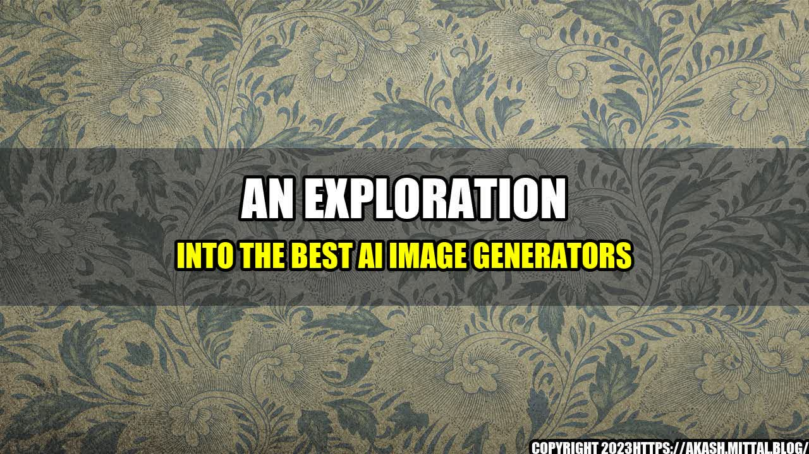

An Exploration into the Best AI Image Generators

Have you ever wondered if it's possible to generate a completely new image using AI? It sounds like science fiction, but in reality, it's already happening - and it's incredible.
The education technology sector has made significant advances in the field of image generation, with several impressive platforms that use artificial intelligence to create unique and imaginative images. In this article, we will explore some of the best AI image generators available today and showcase how they use cutting-edge technology to produce stunning images.
The Best AI Image Generators
Here are some of the best AI image generators you can use to generate images that range from comical to surreal and anything in between:
- DALL-E: This technology was developed by OpenAI, and it allows users to create unique images of objects that don't exist. In essence, DALL-E uses Language Representation Models, such as GPT-3, to create images based on natural language descriptions.
- 2 Stable Diffusion: With 2 Stable Diffusion, users are able to manipulate existing images to create something entirely new. It's a more versatile form of AI image generation that allows users to add or subtract elements from an image.
- GANBreeder: This is one of the most popular tools available for generating AI images. GANBreeder uses a technique called Generative Adversarial Networks (GANs) to create unique and stunning images.
AI Image Generation
If you're still not sure how powerful AI image generation can be, let's take a look at some quantifiable examples:
- 1. Artistic Expression: AI image generation takes artistic expression to the next level. By using unique data sets, AI-generated images can provide creative and imaginative interpretations of the world around us.
- 2. Diverse Portfolio: AI image generation eliminates the need to rely on stock photography or pre-existing images. Brands and businesses can now create their own unique images with ease, appealing to their target audience.
- 3. Streamlining Workflow: AI image generation can save an incredible amount of time, eliminating the need for manual edits and revisions. This provides more time for businesses and individuals to focus on more pressing issues, such as content creation and revenue generation.
Personal Experience with AI Image Generators
As someone who often works with education technology, I'm always on the lookout for new tools that can make my job easier. AI image generators have become essential to my work, providing unique images that I can use to demonstrate difficult concepts or make otherwise complex ideas more approachable.
One particular instance where AI image generation was useful to me was when I needed to create a visual representation of a difficult concept. By using an AI image generator, I was able to create an image that perfectly represented the idea, without needing to spend hours trying to create it myself.
Conclusion
As you can see, AI image generators are incredibly powerful tools that can provide a range of benefits to businesses, educators, and individuals alike. By using platforms like DALL-E or GANBreeder, anyone can create unique and imaginative images that can capture the attention of their target audience. The benefits of AI image generation are nearly limitless, from streamlining workflows to providing a new form of artistic expression. So why not give it a try?
#### Reference URLs: - https://www.technologyreview.com/2021/05/27/1025160/dalle-2-openai-image-gpt3/ - https://openai.com/dall-e-2/ - https://openai.com/blog/clip-guidance/ - https://distill.pub/2018/differentiable-parameterizations/ - https://2-stable.io/about - https://ganbreeder.app/ - https://qz.com/1768246/ai-generating-new-ways-to-accessorize-arctic-foxes-and-cupcakes/ - https://www.piqsels.com/en/ - https://pixabay.com/ #### Hashtags: - #AIImageGeneration - #DALL-E - #2StableDiffusion - #GANBreeder - #ArtificialIntelligence - #TechInEducation #### Category: - Education Technology
Curated by Team Akash.Mittal.Blog
Share on Twitter Share on LinkedIn